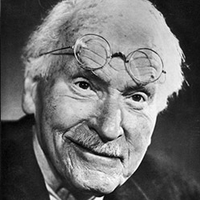
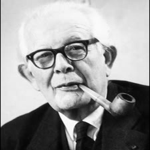
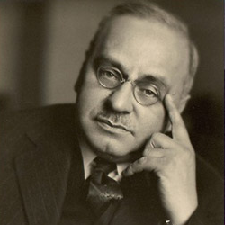
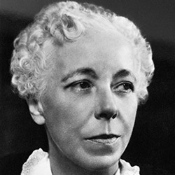

Карл Густав Юнг — швейцарский психиатр, психолог, философ, основоположник аналитической психологии.
Юнг разработал теорию о коллективном бессознательном, в образах (архетипах) которого видел источник общечеловеческой символики, в том числе мифов и сновидений («Метаморфозы и символы либидо»). Цель психотерапии, по Юнгу — осуществление индивидуации личности. Обосновал типологию характеров в зависимости от доминирующей функции личности. Юнг рассматривает проблемы мифологии и религии в связи с теми или иными положениями аналитической психологии. Оказал значительное влияние на культурологию, сравнительное религиоведение и мифологию.
"Символы открывают человеку священное и одновременно предохраняют его от непосредственного соприкосновения с колоссальной психической энергией архетипов."
"Быть «нормальным» – идеал для неудачника, для всех тех, кому еще не удалось подняться до уровня общих требований. Но для тех, чьи способности намного выше среднего, – для таких людей рамки нормы означают прокрустово ложе, невыносимую скуку, адскую беспросветность и безысходность."

Жан Вильям Фриц Пиаже — швейцарский психолог и философ, известен работами по изучению психологии детей, создатель теории когнитивного развития. Основатель Женевской школы генетической психологии, позднее Ж. Пиаже развил свой подход в науку о природе познания — генетическую эпистемологию. Выдвинул концепцию стадиального развития психики. В первых работах (“Речь и мышление ребенка”, 1923) детально проанализировал качественную специфику детского мышления. Используя метод клинической беседы, выдвинул, опираясь на суждения ребенка, положение о том, что главной отличительной характеристикой его познавательной деятельности является эгоцентризм, в силу которого он смешивает субъективное и объективное, переносит свои внутренние побуждения на реальные связи вещей.
"Практика рассказывания и спора не ведет к открытию, но приучает мысль к связанности."
"Детские определения всегда интересны, но истолкование их трудно."

Альфред Адлер — австрийский психолог и психиатр , создатель концепции индивидуальной теории личности. Адлер вводит в объяснение социальный фактор: характер человека складывается под воздействием его «жизненного стиля», то есть сложившейся в детстве системы целенаправленных стремлений, в которой реализуется потребность в достижении превосходства, самоутверждении как компенсации «комплекса неполноценности». Он предположил, что жизнь человека определяется борьбой двух основных потребностей: потребности во власти и превосходстве и потребностью в привязанности и принадлежности к социальной группе. Центральным для концепции Адлера стало понятие «компенсации». Стремление преодолеть комплекс неполноценности запускает процесс развития человека.С позиций собственных представлений о движущих силах развития человека он рассматривает механизмы формирования невротической психики, в том числе связанные с ошибками воспитания, а также главные цели и методы терапевтической работы.
"Каждый человек является творцом, ибо он творит нечто из различных врождённых факторов и возможностей."
"Психологическое развитие происходит только тогда, когда у личности есть цель."
"Никому ещё не удавалось вырасти, не совершив при этом ошибок."

Карен Хорни — американский психоаналитик и психолог, одна из ключевых фигур неофрейдизма. Акцентировала значение воздействия окружающей социальной среды на формирование личности. Основу мотивации человека она усматривала в чувстве беспокойства, которое заставляет человека стремиться к безопасности, и в котором заключена потребность всамореализации. По Хорни цель терапии состоит в восстановлении отношений с людьми и собой, поиска точки опоры в себе, избавления от невротических защитных механизмов, лишь отчасти помогающих человеку справляться с жизненными трудностями, но при более глубоком взгляде закрывающими возможность нормальной жизни.Свою трактовку невротических конфликтов Хорни видоизменила в своей главной и наиболее зрелой работе «Невроз и личностный рост: Борьба за самореализацию» (1950).
"Навязчивое стремление к совершенству в большой степени развивается из потребности избегать какого-либо неодобрения."
"Это долгий и трудный урок для любого человека - усвоить, что другие не могут ни отнять наше самоуважение, ни подарить нам его."
Психология (от др.-греч. ψυχή — «душа»; λόγος — «учение») — наука, изучающая закономерности возникновения, развития и функционирования психики и психической деятельности человека и групп людей.
КАСАЕТСЯ ЛИ ЛИЧНО НАС ПСИХОЛОГИЯ?
При всей риторичности вопроса, существуют представления, что психология как область знания - это то, что преподают в университете, где полубезумные профессора сочиняют такие же теории. К ней (психологии) прибегать стоит лишь в случаях жизненных кризисов и стрессов, а психологи-практики в общем ничего нового не скажут, так что можно и самому себе помочь, прочитав статью в популярном журнале...
Но реальность такова, что психика - это собственно софт (програмное обеспечение) человека, его основа, и от правильности её (психики – софта) работы зависит вся, без преувеличения, жизнь. Примеров тому – масса: от жалоб на несложившуюся семейную жизнь (хотя причина не в пятом(й) муже/жене, а возможно в неверном алгоритме действий, исправив который возможен happy еnd) до болезней постоянно атакующих человека, источники коих также расположены в психике… К сожалению, в современном обществе формирование институтов (организаций), которые бы учили людей самостоятельно пользоваться инструментами для работы со своей психикой, на начальном этапе. Одним словом, Психология должна стать основой здоровой личности и общества, и тут без личного участия человека никакой психолог, волшебник, экстрасенс, маши он волшебной палочкой или бей в бубен (музыкальный инструмент), не поможет. Так что - в добрый путь, друзья !
_____________________________________
(На главной странице сайта изображен "Витрувианский человек" (символ познания и стремления к гармонии), автор Леонардо Да Винчи, с нанесением чакральной системы (7 чакр, Индийская традиция) и основателями психологических направлений (К. Хорни ... К.Юнг) занимавшихся изучением соответствующих сфер психики человека.)
Psychology (from other Greek. Ψυχή-“soul”; λόγος-“teaching”) is a science that studies the laws of the emergence, development and functioning of the psyche and mental activity of man and groups of people.
Is psychology personally concerns us?
For all the rhetoricity of the issue, there are ideas that psychology as a field of knowledge is what is taught at the university where half -craft professors compose the same theories. It is worth resorting to it (psychology) only in cases of life crises and stresses, and psychologists-practitioners in general will not say anything new, so you can help yourself by reading the article in a popular magazine ...
But the reality is that the psyche is actually a person (software) of a person, its basis, and the whole, without exaggeration, life depends on the correctness of its (psyche - software). There are many examples of this: from complaints about the uninhabited family life (although the reason is not in the fifth (th) husband/wife, but possibly in the wrong algorithm of action, having corrected which Happy End is possible to the diseases of the constantly attacking person, the sources of which are also located in the psyche ... Unfortunately, in modern society the formation of institutions (organizations) that would teach people to independently use tools to work with their psyche, in the initial stage. In a word, psychology should become the basis of a healthy personality and society, and here without a person’s personal participation there is no psychologist, wizard, psychic, Masha, he will not help with a magic wand or hit in a tambourine (musical instrument). So - Good Way, friends!
_____________________________________
(on the main page of the site is the “Vitruvian man” (a symbol of knowledge and the desire for harmony), the author of Leonardo da Vinci, with the application of the chakra system (7 chakras, Indian tradition) and the founders of psychological directions (K. Horney ... K. Yung) engaged in the study of the relevant spheres of a person’s psyche.)